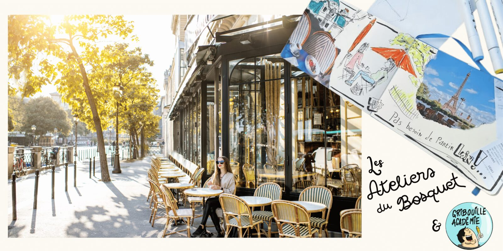
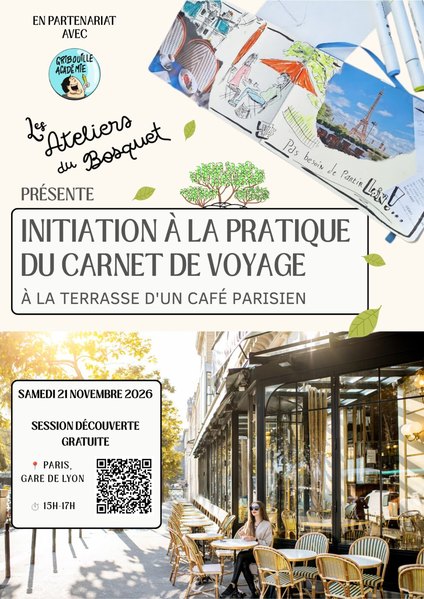
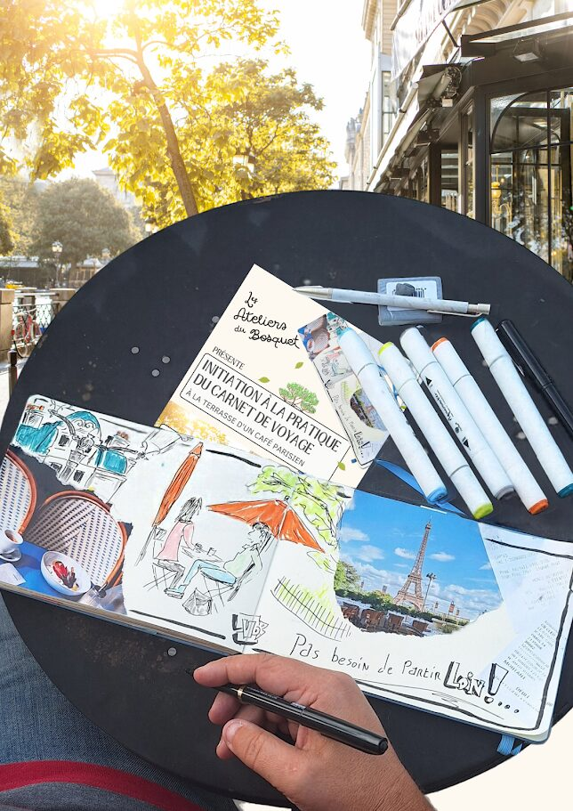

Observer
Prendre le temps de regarder ce qui nous entoure et de choisir un détail.
Les Carnets du Bosquet
Des ateliers sensibles pour regarder un lieu avec attention, garder une trace de ses découvertes et créer sans avoir besoin de savoir dessiner.

Une pratique accessible
Le carnet devient un espace pour observer, expérimenter et partager. On y mêle traits, mots, couleurs, collages et souvenirs.
Prendre le temps de regarder ce qui nous entoure et de choisir un détail.
Tester un trait, une forme, une couleur, sans chercher la perfection.
Assembler images et mots pour garder une trace personnelle du moment.

Le Carnet Café
Un atelier convivial pour s’initier à la pratique du carnet de voyage, en intérieur puis au fil d’une courte déambulation. On expérimente, on échange et chacun repart avec des pistes pour continuer son propre carnet.
Le matériel peut être apporté ou prêté sur place. Les prochaines dates seront annoncées ici.
Recevoir les prochaines datesLe déroulé
Pour les collectifs
Une équipe, une association ou une communauté peut aussi se raconter par les images. Les ateliers s’adaptent à votre lieu, votre sujet et votre rythme : carnet de territoire, carnet d’équipe, récit d’un projet ou fresque de traces.
Parler d’un atelier pour votre collectifUn format sur mesure, de quelques heures à un cycle, avec une restitution collective.
Galerie & retours
Les images des premiers ateliers arrivent ici, au fil des rencontres.

« Une manière joyeuse de regarder autrement ce qui nous entoure. »
Retour du premier Carnet Café